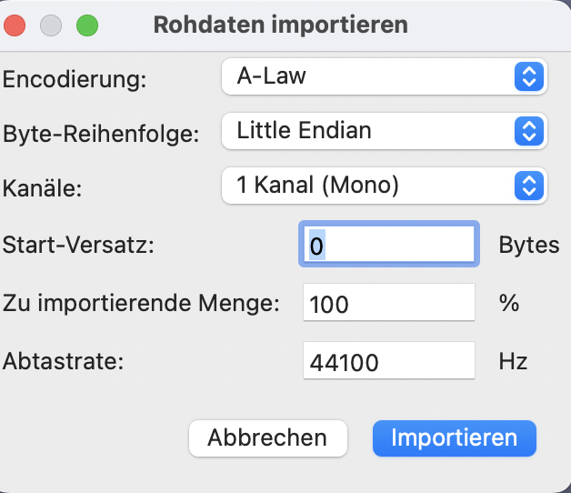
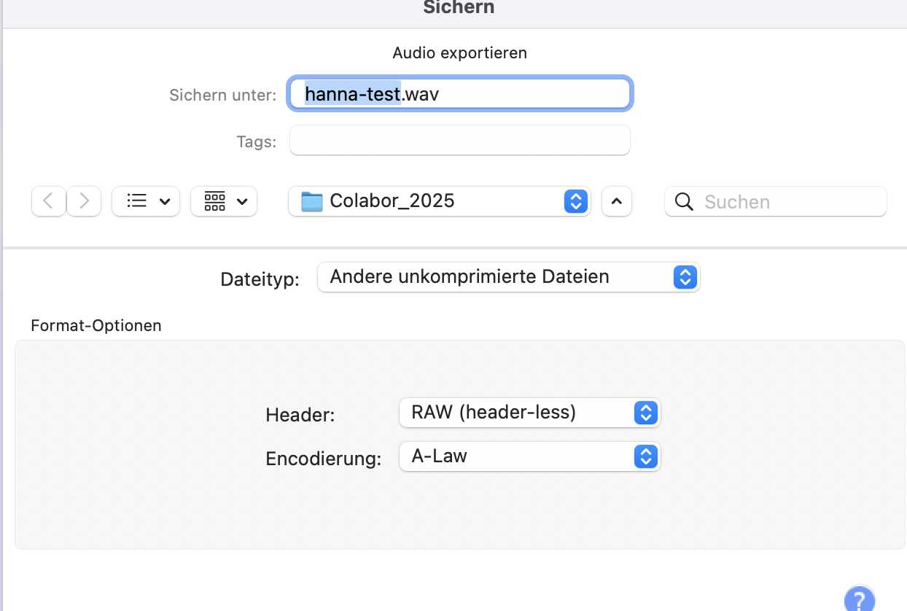

Auditization ist eine Databending-Methode: Eine Bilddatei (z. B. ein BMP oder RAW) wird in einem Audioeditor wie Audacity geöffnet, mit Effekten (Hall, Verzerrung, Echo) bearbeitet und dann wieder als Bild gespeichert. Die Pixel werden dabei buchstäblich wie Schallwellen behandelt.
Download Audacity: Audacity

